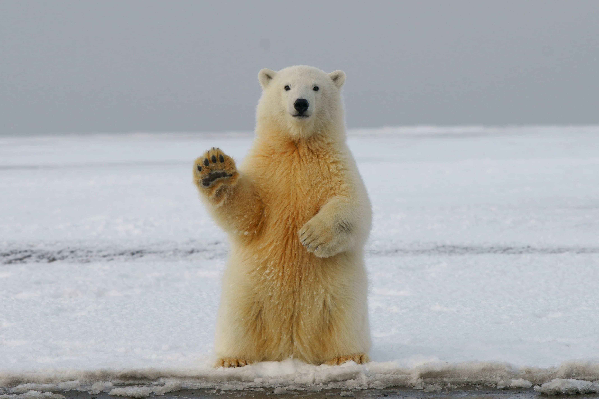

The Polar Bear
The polar bear (Ursus maritimus) is a hypercarnivorous species of bear. Its native range lies largely within the Arctic Circle, encompassing the Arctic Ocean and its surrounding seas and landmasses, which includes the northernmost regions of North America and Eurasia. It is the largest extant bear species, as well as the largest extant land carnivore. A boar (adult male) weighs around 350–700 kg (770–1,540 lb), while a sow (adult female) is about half that size. Although it is the sister species of the brown bear, it has evolved to occupy a narrower ecological niche, with many body characteristics adapted for cold temperatures, for moving across snow, ice and open water, and for hunting seals, which make up most of its diet. Although most polar bears are born on land, they spend most of their time on the sea ice. Their scientific name means "maritime bear" and derives from this fact. Polar bears hunt their preferred food of seals from the edge of sea ice, often living off fat reserves when no sea ice is present. Because of their dependence on the sea ice, polar bears are classified as marine mammals.
Because of expected habitat loss caused by climate change, the polar bear is classified as a vulnerable species. For decades, large-scale hunting raised international concern for the future of the species, but populations rebounded after controls and quotas began to take effect. For thousands of years, the polar bear has been a key figure in the material, spiritual, and cultural life of circumpolar peoples, and polar bears remain important in their cultures. Historically, the polar bear has also been known as the "white bear". It is sometimes referred to as the "nanook", based on the Inuit term nanuq.